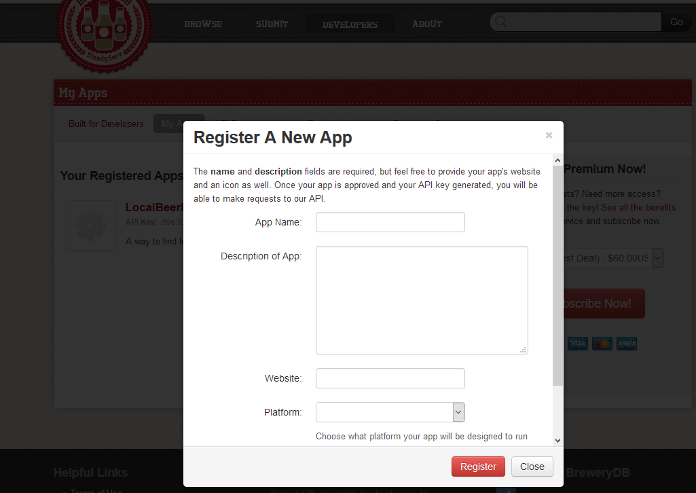

BreweryDB API How-To
In order to use the BreweryDB API (and most API’s actually), you will need an API key. This is essentially a unique signature that identifies that your client is the one making the request. It is included in every request for information you make to the database. The purpose of this is to prevent heavy server load and abuse. Each key generally has a limit on the amount of requests that it can make. The BreweryDB has a free key that is limited to 400 read requests per 24 hours. So If you want to put this on a huge site with lots of traffic, you may want to get the paid version, which gives your key unlimited read requests. But for now, the free API key is ok.
you’ll want to head over to the website at BreweryDB.com and sign up for an account. Once that’s done, go to developers, my Apps, and register a new app. In order to get an API key, they want you to give some info about whatever app you’re going to use their API for. 
It’s ok if you don’t actually have something yet. Just give what’s needed, and it should spit out an API key to your email pretty quickly. Once you’ve got that, you’re ready to make some requests! Well, you're almost ready. There's a pretty nasty issue when trying to get this information, which we'll address after we go over making some basic requests.